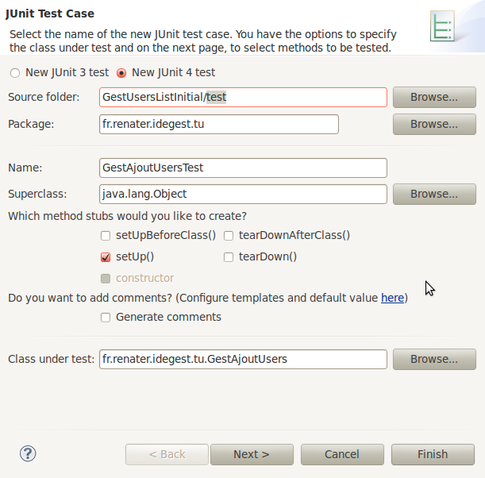

Liste de liens :
−Table des matières
TD - Test Unitaire - Initiation - (java)
En référence au cours : testunitaire
Objectifs
- Familiariser l'étudiant à la notion de test unitaire, méthodes et outils associés
- Présenter les concepts de base d'une approche de la programmation par les tests unitaires
- Utiliser un outil de mise au point et d'exécution de tests unitaires (JUnit)
- Concevoir et programmer des tests unitaires
Limite : la conception de simulacres de service (bouchon, stub et autres mock) n'est pas abordée.
Remarque : suite à ce TD, dans le cadre des PPE prévoir une mission, une activité, mettant en oeuvre la conception de tests unitaires.
Présentation du contexte support
L'application exemple dont il est question a pour objectif de permettre à un utilisateur (un gestionnaire) de générer un fichier d'utilisateurs de la forme :
<?xml version="1.0" ?> <users> <user> <nom>Martin</nom> <prenom>Bob</prenom> <uid>bmartin</uid> <pw>12345</pw> </user> <user> etc. <users>
L'application exploite un document décrivant des utilisateurs (au format XML,
en lecture/écriture). L'ajout d'utilisateur se fait à partir de son nom
et prénom, génére son identifiant et mot de passe. Nous partirons d'une
première itération de l'application (projet Eclipse) réalisée quick and
dirty (voir plus bas).
Cas d'utilisation : ajouter des utilisateurs
- Description du cas d'utilisation : Création/Mise à jour d'une liste d'utilisateurs
- Acteur : un gestionnaire système
- Postcondition : Une liste d'utilisateurs exploitable par un administrateur système.
- Scénario type
- Le gestionnaire communique l'adresse du fichier des utilisateurs à mettre à jour
- Le système demande un nom et prénom d'un futur utilisateur
- Le gestionnaire saisit et soumet un nom et un prénom
- Le système ajoute à la liste des utilisateurs une nouvelle entrée composée du nom/prénom de l'utilisateur, d'un identifiant unique dans la liste et d'un mot de passe.
- le gestionnaire peut retourner à l'étape 2 ou arrêter le cas.
Contraintes: les identifiants (uid) sont uniques à la liste (et les mots de passe sont syntaxiquement valides pour le système cible).
En résumé : L'application permet à l'utilisateur de créer une liste
d'utilisateurs (nom, prenom, uid, mot de passe), d'après une saisie
répétée de noms et prénoms.
Voici un exemple de l'application à son lancement :

Présentation de la problématique
Dans sa version actuelle, l'application ne prend en compte aucune contrainte de validité.
Travail à faire
- Télécharger le projet initial GestUsersInitial.zip), puis, en dehors d'Eclipse, copier le zip dans l'espace de travail d'eclipse.
- Depuis Eclipse, importer le projet via la commande
import/general/existing project into workspace(format zip). - Prendre connaissance de l'existant, le faire tourner.
- Modifier le programme afin que l'utilisateur puisse également mettre fin à l'exécution de l'application (quitter) lorsqu'il actionne le bouton
Annuler - Concevoir un diagramme de classes de l'application.
- Déterminer quelle est la classe en charge de la contrainte d'unicité des uid.
Création d'une branche de test parallèle à src
Nous placerons les tests dans un package portant le même nom que celui de la classe à tester,
sauf que celui-ci sera localisé dans une branche à part, nommée test (par convention).
La première chose à faire est de créer cette branche, par exemple via la commande : New/Source Folder

Création d'une classe de test (CUT - class under test)
Nous allons maintenant demander la création d'une classe de test. Nous utiliserons le framework JUnit
(java unit).
Dans la vue package, sélectionner le nom de la classe à tester (en vous
plaçant sur la classe à tester, avant la demande de création de la
classe de test, l’assistant d'eclipse renseignera automatiquement
certains champs), puis demander la création de la classe de test par new/JUnit Test Case, ce qui devrait vous amener à l'équivalence de cette copie écran :

La seule chose que vous aurez à faire est de sélectionner la Branche parallèle, c'est à dire de renseigner le source folder (répertoire source) : test au lieu de scr.
L'écran suivant nous permet de sélectionner les opérations à tester, nous choisirons uniquement la méthode genuid.
Nous obtenons le code source suivant :
package fr.renater.idegest.tu; import static org.junit.Assert.*; import org.junit.Before; import org.junit.Test; public class GestAjoutUsersTest { @Before public void setUp() throws Exception { } @Test public void testGenUid() { fail("Not yet implemented"); } }
Quelques explications :
- La classe
GestAjoutUsersTestest dépendante du frameworkJUnit(via les annotations).
- La méthode
setUpsera présentée ultérieurement.
- La méthode
testGenUidest ici la seule méthode de test que nous devons immplémenter (pour l'instant). Par convention les méthodes de test sont préfixées partest(mais c'est l'annotation@Testqui désigne une méthode de test)- l'appel à la méthode fail fera échouer le test, la cause étant passée en argument de la méthode :
Not yet implemented - la méthode fail est une méthode static. elle n'est pas préfixée par sa classe comme il se devrait (
junit.framework.TestCase.fail) car les appels aux différentes méthodes d'assertion (de vérification) seraient trop verbeux. Pour éviter cela, la clauseimport static, spécifiant la classe des méthodes static de JUnit, est inscrite dans le code source, juste après le nom du pakage.
Exécution des tests unitiares
Bien que notre méthode de test ne soit pas encore opérationnelle, elle reste malgré tout valide (aucune erreur de syntaxe).
Nous pouvons donc lancer l'exécution de cette méthode.
Le plus simple consiste à demander l'exécution de la classe de test (GestAjoutUsersTest) à partir de la vue Package Explorer:
(faire un clic droit sur GestAjoutUsersTest, puis Run As/JUnit Test.
La vue JUnit passe alors en premier plan, et nous fournit les indicateurs :
- Runs : nombre de test exécutés (dans notre cas 1/1)
- Errors : le nombre d'erreurs rencontrés lors de l'exécution des tests (dans notre cas aucune)
- Failures : le nombre de test non validés (ici un)
Attention à ne pas confondre Errors et Failures.
Une Error signale un bogue dans le corps du test, alors que
Une Failure est un test qui a échoué (non validé) sans erreur !
Une Error signale un bogue dans le corps du test, alors que
Une Failure est un test qui a échoué (non validé) sans erreur !
La barre d'état passera au vert si aucune erreur n'est rencontrée et si tout les tests seront passés avec succès, dans le cas contrainre nous aurons droit à une barre rouge. Dans ce dernier cas, le développeur devra prioritairement corriger :
- (Errors) les erreurs/bogues dans ses tests unitaires
- (Failures) la classe testée (CUT)
Pour les besoins de la démonstration, nous allons provoquer volontairement une erreur dans le test :
On distingue clairement que l'on demande le nombre de caractères à une chaine (instance de String) inéxistante !
L'exécution du test (via l'interface) devrait nous signaler une erreur.
Effectivement ! la cause de l'erreur (NullPointerException) est donnée en bas de la vue JUnit.
On remarque l'absence d'echec au test (Failure) : l'exécution du test s'arrête à la première erreur rencontrée.
Conception des test et primitives JUnit
Une bonne pratique consiste à concevoir une classe de tests unitaires par classe à tester (CUT).
Le plus souvent, nous testons une classe par l'intermédiaire d'une de ses instances, nommée OUT - object under test.
Ce sera le cas ici. En effet, pour tester la méthode genUid, nous devons disposer d'un objet de type GestAjoutUsersTest.
Considérons la spécification suivante :
- (spec1) Un
uidest composé de la première lettre du prénom suivi du nom
Voici une premiere implémentation maladroite testant cette spécification :
@Test public void test2PremiersCarsGenUid() { try { GestAjoutUsers gau = new GestAjoutUsers("testusers.xml"); String uid = gau.genUid("Bob", "Martin"); if (! uid.startsWith("BM")) fail("Premiers caractères de l'uid invalides !"); } catch (IOException e) { fail("Création de l'OUT impossible !"); } }
Explications :
- Le nom du test dénote son rôle, son objectif
- Le corps du test créé une instance de la classe à tester (dans le try)
- Puis appelle la méthode, objet du test, avec des arguments précis
- Le test vérifie ensuite que le résultat obtenu respecte bien la spécification visée
- Dans le cas contraire, l'instruction
failest appelée afin de faire échouer le test - En cas d'impossibilité de création de l'instance (out), le test échoue également.
Critiques
- Les tests unitaires doivent être indépendants les uns les autres. Il faudra donc que chaque test créé son propre OUT
- pour éviter une duplication de code, les concepteurs de JUnit ont introduit la méthode
setUpqui est appellée avant chaque exécution d'un test.
- Il serait fastidieux d'utiliser systhématiquement une condition avec un
ifpuis d'appelerfail- pour éviter cela, JUnit propose tout une batterie de méthodes d'assertion.
Forme générale d'une assertion JUnit
public static void assertCondition(java.lang.String message, typeYYY attendu, typeYYY obtenu)
- Le premier paramètre (optionnel) est un message qui sera affiché par le framework seulement si l'assertion n'est pas vérifiée.
- Le deuxième (ou premier s'il n'y a pas de message) est soit la valeur reçue (si pas de 3ième argument) soit correspond à la valeur attendue.
- Le troisième argument (si présent) correspond à la valeur reçue (celle à tester).
Réécriture de la classe de test
public class GestAjoutUsersTest extends TestCase { /** l'OUT */ private GestAjoutUsers gau; // 1 @Before protected void setUp() throws Exception { try { this.gau = new GestAjoutUsers("testusers.xml"); // 2 } catch (IOException e) { fail("Création de l'OUT impossible !"); } } @Test public void test2PremiersCarsGenUid() { String uid = this.gau.genUid("Bob", "Martin"); // 3 assertTrue("Les 2 premiers caractères sont valides", uid.startsWith("bm")); // 4 } }Explications - Observez les marqueurs de ligne (numérotation en commentaire de fin de ligne)\\
- (ligne 1) L'objet à tester est déclaré comme attribut de la classe de test
- (ligne 2) La création de l'objet à tester est placée dans
setUp - (ligne 3) Appel du service à tester
- (ligne 4) Appel à une méthode d'assertion
assertTrueafin d'éviter leif…fail.
Ainsi, le code des méthodes de test sera plus concis et plus facilement centré sur le problème.
En résumé, les instructions if (test) fail(“assertion non vérifiée”) sont à éviter,
au profit de l'utilisation de méthodes d'assertion de type assertCodition(“assertion”, valeur attendue, valeur obtenue).
Les opérations d'assertions de base de JUnit sont :
- assertTrue, assertFalse : vérifie une expression booléenne.
- assertNull, assertNotNull : vérifie si l'argument est null ou non.
- assertEquals : compare les deux arguments en s'appuyant sur la méthode equals.
- assertSame : vérifie si les arguments référencent le même objet.
consulter les méthodes d'assertions - API de JUnit
Voici un autre exemple utilisant une méthode assertEquals conçue avec 3 paramètres:
@Test public void test2PremiersCarsGenUidBis() { String uid = this.gau.genUid("Bob", "Martin"); // 1 String premscar = uid.substring(0, 2); // 2 assertEquals("Les 2 premiers caractères sont valides", "bm", premscar); // 3 }
Quelques explications (qui devraient maintenant vous êtes familières) :
- (ligne 1) On appel le service à tester, puis on récupère le résultat
- (ligne 1) Place les 2 premiers caractères dans une variable
- (ligne 3) Appel de la methode
assertEqualsavec 3 arguments (“bm” est la valeur attendue, premierscar la valeur obtenue).
Munis de nos deux tests unitiares, nous relançons l'exécution de la classe :
Nous constatons sans surprise que nos deux tests ne passent pas.
Nous devons donc maintenant corriger la classe testée (CUT) dans le but de faire passer ces 2 tests.
Correction de la classe métier
Rappel de la contrainte visée : l'identifiant utilisateur doit commencer par la première lettre du prénom, suivi par la première lettre du nom.
public String genUid(String firstname, String name) { return firstname.substring(0, 1).toLowerCase() + name.toLowerCase(); }
On constate que nous nous sommes contentés d'un strict minimum de correction, d'évolution, nécessaire au bon fonctionnement des tests. Cette approche par le minimum est tout à fait dans l'esprit des méthodolgies dirigées par les tests unitaires : on évite de coder du superflu (ce qui devrait être assez compatible avec les étudiants de la génération Y :)
Relance des tests
Une fois l'objet métier modifié, nous vérifions son bon fonctionnement vis à vis des tests.
Nous demandons l'exécution de la classe GestAjoutUsersTest :
Bingo ! La barre est passée au vert : nos 2 tests sont passés.
Résumé
Nous avons présenté comment :
- créer une classe de test en relation avec une classe d'un projet java avec eclipse
- jouer (exécuter) un jeu de tests
- différencier un test qui échoue d'un bogue d'implémentation d'un test
- apprécier la situation dans laquelle tous les test sont passés
- concevoir et implémenter, à partir d'une spécification (contrainte), une logique de test unitaire
- factoriser du code d'initialisation dans une méthode spécifique à cela (setUp)
Il est temps de vous lancer seul dans l'aventure…
Références et Conseils
Kent Beck a défini deux règles de base d'une approche du développement guidée par les tests :
- Vous ne devez écrire un nouveau code métier seulement si un test automatisé a échoué.
- Vous devez éliminer toute duplication de code que vous trouvez.
Une bonne entrée sur le sujet : Scott W. Ambler : une introduction au Développement Guidé par les Tests (TDD)
Travail à faire : Extension de la classe de test, fonction de l'évolution des spécifications (CUT)
TP 1
Poursuite des tests. Les classes concernées sont GestAjoutUsersTest et, bien entendu, GestAjoutUsers.
A y regarder de plus près, la méthode
genUid est au service de la méthode addUser
et aurait pu être privée. C'est pour des raisons pédagogiques que nous
l'avons rendue publique, afin de permettre de nous concentrer
directement sur cette responsabilité.
Concevoir au minimum un test unitaire par ligne de spécification (définies ci-dessous).
Ne passer au développelment du test suivant seulement si tous les tests présents passent avec succès.
- L'uid obtenu est tout en minuscule
- L'uid obtenu est composé au minimum de 5 caractères et maximum de 9 (première lettre du prénom suivi de premières lettres du nom - si possible)
- L'uid ne contient pas de caractères indésirables (
{}/~…) ni accent ou apostrohe, guillemet… - L'ajout de plus d'un utilisateur avec même nom et même première lettre de prénom génère des UIDs différents (on passera la méthode
addUserdu statut de procédure à celui de fonction : elle retournera la valeur de référence à l'objetUsercréé - donc la valeur de retour seraUseret nonvoid). La méthode à tester estaddUser. - Les méthodes
saveetrestorefont bien leur travail - La méthode
genPasswordrespecte bien le nombre de caractères attendu - La méthode
genPassworddonne des valeurs différentes à chaque appel
Exemple de données de test (homonymes acceptés)
| Prénom | Nom |
|---|---|
| Paul | Dupont |
| Pierre | Dupont |
| Patrick | Dupont |
| Patricia | Dupont |
| Paul | Dupont |
| Pauline | Dupont |
| Pascal | Dupont |
| Pierre-Alain | Dupont |
| P'nam | Dupont |
| Paul | Dupont |
| Patrick-Jean-Max | Dupont |
| Ly | Ba |
| Alan | N'Guyen |
| Abû Ja`far Muhammad | Mūsā Khwārezmī |
| Phil | Zimmerman |
| Richard | Stallman |
| Yukihiro | Matsumoto |
| Guido | Van Rossum |
TP 2
- Concevoir la classe de test
UtilHtmlTestet y implémenter les méthodes de test présentées dans la section cours - Concevoir la classe utilitaire
UtilHtmlet sa méthodetoHtmlTab - Traiter le cas où maxRows=0
Bonne programmation !


{kind=link}
{kind=link}
{kind=link}
{kind=link}
{kind=link}
{kind=link}
{kind=link}